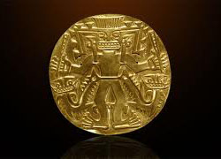
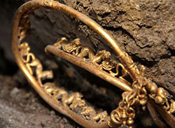

America's premier treasure hunting magazine!
America's premier treasure hunting magazine!
Nuestra Señora de Atocha ("Our Lady of Atocha") was the most famous of a fleet of Spanish ships that sank in 1622 off the Florida Keys while carrying copper, silver, gold, tobacco, gems, jewels, jewelry, and indigo from Spanish ports at Cartagena and Porto Bello in New Granada (current Colombia and Panama, respectively) and Havana bound for Spain. The ship was named for the parish of Atocha in Madrid.
An unfortunate series of complications kept the Atocha in Veracruz before she could rendezvous in Havana with the vessels of the Tierra Firme Fleet. The treasure arriving by mule to Panama City was so immense that summer in 1622 that it took 2 months to record and load the precious cargo on the Atocha.[1] After still more delays in Havana, what was ultimately a 28-ship convoy did not manage to depart for Spain until September 4, 1622, six weeks behind schedule.
The vast majority of gold items taken by the Spanish were melted down either in Mexico itself after the Conquest or here in Europe. That said, a good stack of it probably found its way over to England, having been plundered by (English) pirates that attacked Spanish booty ships en route for Spain. Cast a quick glance at that gold ring on your (or my) finger: it could have minute traces of Aztec gold in it...!
Ask any Mexican how much gold the Spanish took from the Aztecs and they’ll reply ‘¡un (l)ingo(te)!’. We tried to set this question into some sort of context: first we consulted Dr. Leonardo López Luján (member of our Panel of Experts) on this. He reminded us to begin with that Mexico is a country that’s relatively poor in gold deposits (compared, for instance, with Alaska, California, the north-east of South America...). He writes: ‘that means that the Mexica obtained relatively little gold, compared with the ancient societies of Colombia, Ecuador and Peru. Our [Mexico’s] archaeological collection amounts to a mere 500 or so pieces of gold, all pretty tiny. And that’s in three decades of excavations...’ Warwick Bray, another of our experts, has written much on pre-Columbian gold: some years ago he told us that if you gathered together all the ceremonial gold artefacts from the Aztec capital that have survived today, you could quite easily fit them into your cupped hands.
The Egyptian Museum of Antiquities contains many important pieces of ancient Egyptian history. It houses the world’s largest collection of Pharaonic antiquities, and many treasures of King Tutankhamen. The Egyptian government established the museum, built in 1835 near the Ezbekeyah Garden. The museum soon moved to Boulaq in 1858 because the original building was getting to be too small to hold all of the artifacts. In 1855, shortly after the artifacts were moved, Archduke Maximilian of Austria was given all of the artifacts. He hired a French architect to design and construct a new museum for the antiquities. The new building was to be constructed on the bank of the Nile River in Boulaq. In 1878, after the museum has been completed for some time, it suffered some irreversible damage; a flood of the Nile River caused the antiquities to be relocated to another museum, in Giza. The artifacts remained there until 1902 when they were moved, for the last time, to the current museum in Tahrir Square. During the Egyptian Revolution of 2011, the museum was broken into, and two mummies were reportedly destroyed.[1][2] Several artifacts were also shown to have been damaged.[3]Around 50 objects were lost.[4]Since then 25 objects have been found. Those which were restored were put on display in September 2013 in an exhibition entitled Damaged and Restored. Among the displayed artefacts are two statues of King Tutankhamen made of cedar wood and covered with gold, a statue of King Akhenaton, Ushabtis statues which belonged to the Nubian kings, a mummy of a child and a small plychrome glass vase.[5]